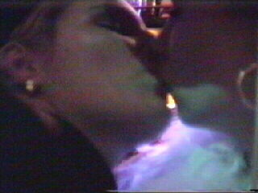

|
Fastelaovend febberwari 2002 |
Net als verleden jaar kwam Regillio Vrede een
dag
carnaval vieren in het betrekkelijk
anonieme
Posterholt.
V.l.n.r.: Regillio, Linda,
Picachu
en Loes.
Dit jaar verkleed als 70er jaren Motown-artiest.
Derhalve onherkenbaar ;-)

Kusje.
Picachu wil ook.
Na het carnavalsvertier is het tijd voor
frieten,
kouw sjottel en broodjes.
Musketier Victor (r).

Patrick (vriend van Vrede) valt Linda aan.
Enkele uurtjes later staan we op Kaalhei om de
training bij te wonen.
Zij liever dan wij......
Het was weer koud op Kaalheide.
Dus even tussendoor naar Indians voor koffie
en
broodjes.
Regillio bedankt ons voor de support.
Tot zaterdag in Doetinchem!!!
©KPD